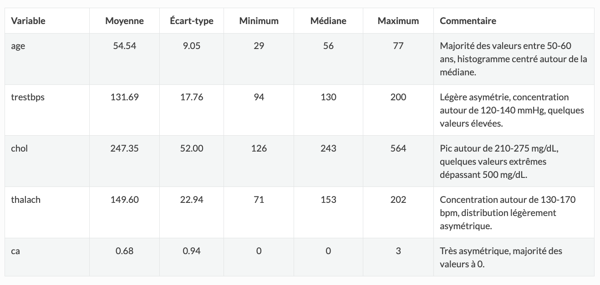
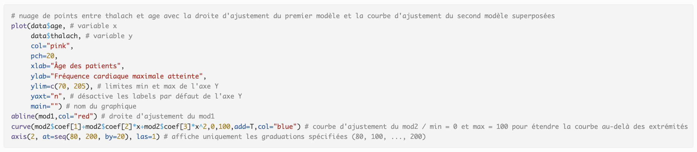
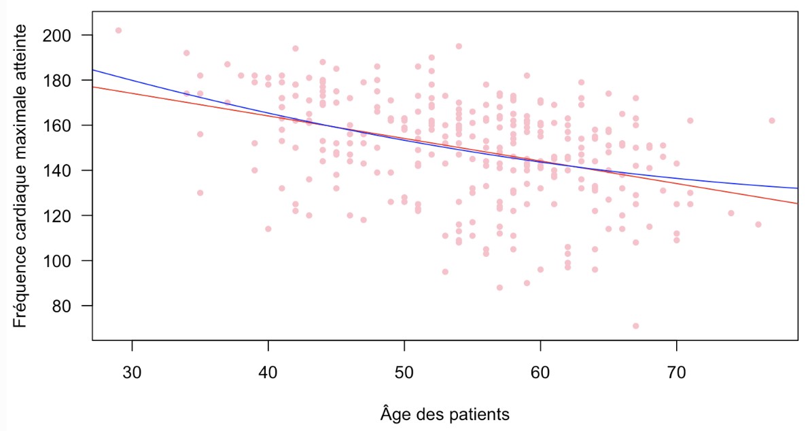
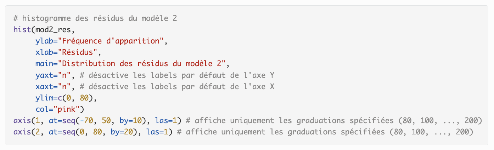
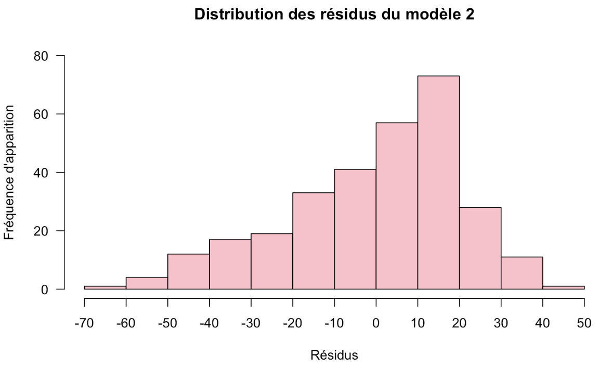

Cette capture d’écran présente un tableau statistique descriptif des variables du jeu de données que j'ai choisi pour l'étude. On y voit les mesures de tendance centrale (moyenne, médiane), de dispersion (écart-type) ainsi que les valeurs minimales et maximales pour chaque variable (âge, pression artérielle au repos, cholestérol, etc.).
Cette synthèse a permis de repérer les variables présentant des valeurs extrêmes (ex. cholestérol), afin d’anticiper leur impact sur l'étude. Elle m’a permis de comprendre la distribution des variables et de les décrire.
Cette preuve démontre que j’ai acquis la compétence AC 12.03, car j’ai su utiliser des synthèses numériques (tableaux descriptifs) pour décrire les variables.
Cette capture d’écran présente un code R permettant de réaliser un nuage de points entre les variables age et thalach (fréquence cardiaque maximale atteinte), et d’y superposer les courbes d’ajustement issues de deux modèles de régression (mod1 et mod2).
Le code inclut des éléments de personnalisation visuelle : couleur des points, titre des axes, limites de l’axe Y et suppression des labels automatiques pour une meilleure lisibilité. L’ajout des droites et courbes d’ajustement (via abline() et curve()) permet de comparer visuellement la pertinence des deux modèles.
Cette preuve démontre que j’ai acquis la compétence AC 12.04, car j’ai intégré des ajustements statistiques (droite et courbe) pour mettre en évidence la relation potentielle entre l’âge et la fréquence cardiaque maximale atteinte.
Cette capture d’écran illustre le nuage de points entre l’âge des patients et la fréquence cardiaque maximale atteinte, avec la superposition de la droite et de la courbe issues des deux modèles de régression.
On observe visuellement une tendance générale à la baisse de la fréquence cardiaque maximale atteinte avec l’âge. L’utilisation de ces deux ajustements permet de comparer la qualité d’ajustement et d’illustrer les éventuelles différences entre une modélisation linéaire et polynômial.
Cette preuve valide la compétence AC 12.03, car elle démontre l’utilisation d’un graphique pour décrire la liaison entre deux variables.
Cette capture d’écran montre le code permettant d'afficher l’histogramme des résidus issus du modèle 2 de régression réalisé. L’axe des X correspond aux valeurs des résidus, tandis que l’axe des Y affiche la fréquence d’apparition de ces résidus.
Cet histogramme aide à vérifier la distribution des résidus afin d'évaluer la normalité et la symétrie des erreurs pour juger la validité du modèle.
Cette preuve valide la compétence AC 12.04, car j’ai su mettre en évidence la distribution des erreurs et vérifier la cohérence du modèle.
Cette capture d’écran représente l’histogramme des résidus du modèle 2 de régression. On observe la distribution des erreurs centrées autour de 0, ce qui est essentiel pour vérifier la validité du modèle.
Cet histogramme met en évidence une distribution relativement asymétrique.
Cette preuve valide la compétence AC 12.03, car elle illustre l’utilisation d’un graphique pour évaluer la qualité du modèle.
R / Excel
Dans cette SAÉ, j’ai endossé le rôle d’un chargé d’étude statistique en répondant à une problématique concrète à l’aide d’une analyse de régression. L’objectif était de mettre en évidence les liaisons entre certaines variables quantitatives à partir de données réelles issues de l'open data.
J’ai mobilisé les ressources programmation statistique (R2.04) pour le traitement des données et la réalisation des graphiques sous R, ainsi que statistique descriptive 2 (R2.05) pour interpréter les résultats et choisir les indicateurs pertinents à calculer.
J’ai préparé un tableau individus/variables à partir de données de santé, exploré les relations possibles par des représentations graphiques, puis testé plusieurs ajustements de régression.
J’ai appris à repérer visuellement les liaisons entre variables, à choisir le bon type d’ajustement, à évaluer la qualité d’un modèle de régression, et à communiquer les résultats de manière claire en utilisant des graphiques et des indicateurs bien choisis.
Compétences développées :
— AC 12.03 |Comprendre l’intérêt des synthèses numériques et graphiques pour décrire une variable statistique
— AC 12.04 |Comprendre l’intérêt des synthèses numériques et graphiques pour mettre en évidence des liaisons entre variables